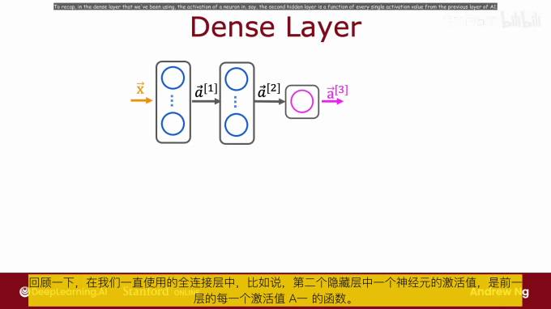
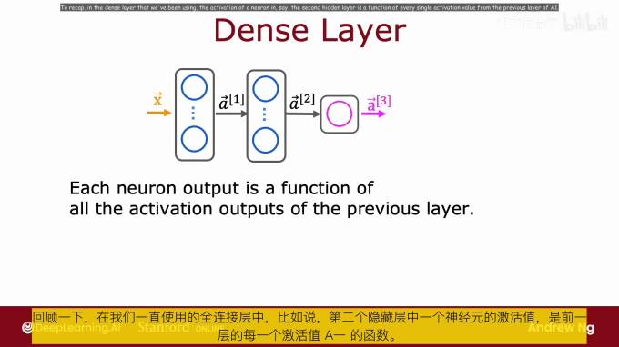
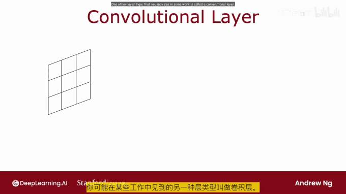
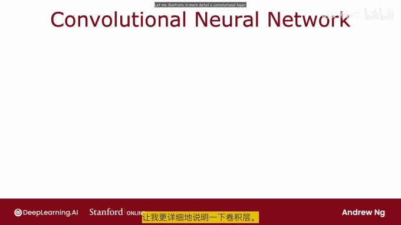
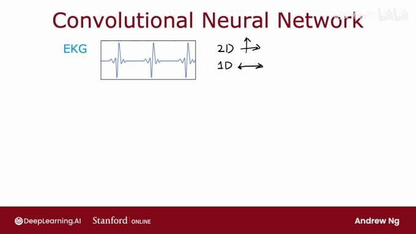
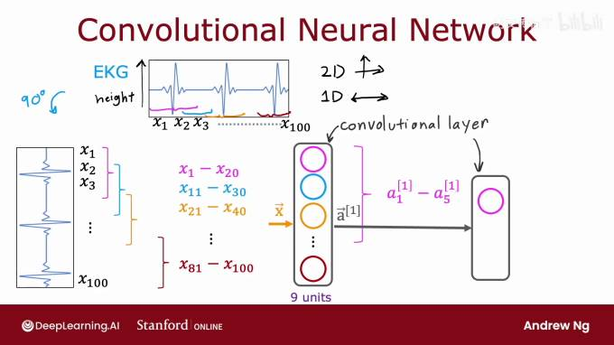
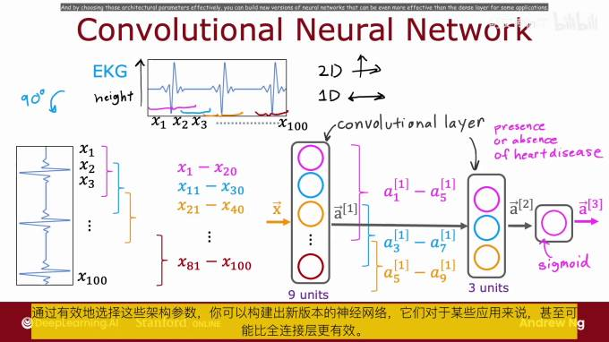

00:03到目前为止，我们使用的所有神经网络层都是全连接层类型，在这种层中，层内的每个神经元都接收来自前一层的所有激活值作为其输入。
00:16事实证明，仅使用全连接层类型，你实际上就能构建出一些相当强大的学习算法。而为了帮助你进一步建立关于神经网络能做什么的直觉，原来还存在一些具有其他特性的其他类型层。
00:34在本视频中，我想简要提及这一点，并给你一个不同类型的神经网络层的例子。
00:43回顾一下，在我们一直使用的全连接层中，比如说，第二个隐藏层中一个神经元的激活值，是前一层的每一个激活值 A 一的函数。n。


01:00但事实证明，对于某些应用，设计神经网络的人可能会选择使用不同类型的层。
01:09你可能在某些工作中见到的另一种层类型叫做卷积层。

01:15让我用一个例子来说明。
01:18我在左侧展示的是输入 x，它是一个手写数字九的图像。
01:25我将要做的是构建一个隐藏层，它将根据这个输入图像 x 计算不同的激活值。
01:34恒找可以做这件一件事。
01:36对于第一个隐藏单元，我用蓝色标出，我不是让这个神经元可以查看这幅图像中的所有像素，而是规定这个神经元只能查看这个小矩形区域内的像素。
01:51第二个神经元，我将用洋红色来说明，同样也不会查看整个输入图像 x。
01:59相反，它只会查看图像中一个有限区域内的像素。
02:04对于第三个神经元、第四个神经元，以此类推，直到最后一个神经元，它可能只查看图像的那个区域。
02:18那么你为什么要这样做呢？
02:21你为什么不每个神经元都查看所有像素，而只让它们查看部分像素呢？
02:28嗯，这样做的一些好处是：首先，它加快了计算速度。
02:34第二个优势是，使用这种称为卷积层的神经网络，可能需要的训练数据更少。
02:43或者，它也可以不那么容易过拟合。
02:47你在之前的课程中听过我谈过一些关于过拟合的问题，但这是我们下周在讨论使用学习算法的实用技巧时会更深入探讨的内容。N。
03:01这种特定类型的层，即每个神经元只查看输入图像的一个区域，被称为卷积层。
03:11一位名叫的研究人员弄清楚了如何让卷积层有效工作的许多细节，并普及了它们的使用。
03:21让我更详细地说明一下卷积层。

03:27如果你在一个神经网络中有多个卷积层，有时这被称为卷积神经网络。
03:35为了说明卷积层或卷积神经网络，在这张幻灯片上，我将不使用二维图像输入，而是使用一维输入。
03:47我将使用的启发性例子是心电图信号或心电图分类。如果你在胸口贴上两个电极，你会记录下像这样的电压，它们对应你的心跳。

04:03这实际上是我的斯坦福研究小组做过研究的内容。
04:08我们实际上在读取像这样的心电图信号，以尝试诊断患者是否可能有心脏问题。
04:17所以，一个心电图信号，有些地方叫，有些地方叫，就是一系列数字，对应着这个曲线上不同时间点的高度。
04:31所以你可能有，比如说，一百个数字，对应这条曲线在一百个不同时间点的高度。
04:39学习任务则是，给定这个时间序列，给定这个心电图信号，进行分类，比如说，判断这位患者是否有心脏病或某种可诊断的心脏状况。
04:53卷积神经网络可能会这样做。
04:56我现在要把心电图信号拿来，旋转九十度，把它平放。
05:03于是我们这里有了一百个输入，x 一、x 二，一直到 x 一百，就像这样。
05:10当我构建第一个隐藏层时，我不让第一个隐藏单元接收所有一百个数字作为输入，而是让第一个隐藏单元只看 x 一到 x 二十。
05:26这相当于只查看这个心电图信号的一个小窗口。
05:31第二个隐藏单元，这里用不同颜色表示，将查看 x 十一到 x 三十。
05:40所以它查看的是这个心电图信号中的一个不同窗口。
05:44然后第三个隐藏单元查看另一个窗口，x 二十一到 x 四十，依此类推。
05:52而这个例子中的最后一个隐藏单元将查看 x 八十一到 x 一百。
05:59所以它查看的是这个心电图时间序列末端的一个小窗口。
06:05因此，这是一个卷积层，因为该层中的每个单元只查看输入的一个有限窗口。
06:13现在，这个神经网络层有九个单元。
06:19下一层也可以是卷积层。
06:24那么，在第二个隐藏层中，我设计我的第一个单元，不让它查看前一层的所有九个激活值，而是比如说，只让它查看前一层的头五个激活值。

06:41然后我第二个隐藏层中的第二个单元可能只查看另外五个数值，比如说 A 三到 A 七。
06:50而这一层的第三个，也就是最后一个隐藏单元只会查看 A 五到 A 九。
06:57然后也许最终，这些激活值 A 二会被输入到一个 sigmoid 单元，该单元确实会查看 A 二的所有这三个值，以便对是否存在心脏病进行二分类。N。
07:15所以，这将是一个神经网络的例子，其第一个隐藏层是卷积层，第二个隐藏层也是卷积层，然后输出层是一个 sigmoid 层。n。
07:28事实证明，对于卷积层，你有许多架构选择，比如单个神经元应该查看多大的输入窗口，以及每层应该有多少个神经元。
07:41通过有效地选择这些架构参数，你可以构建出新版本的神经网络，它们对于某些应用来说，甚至可能比全连接层更有效。N。

07:54回顾一下，卷积层和卷积神经网络的内容就是这些。
07:59在这门课中，我不会更深入地讲解卷积网络，你也不需要了解任何关于它们的知识来完成作业并顺利学完这门课。
08:09但我希望你能觉得这个额外的直觉即神经网络也可以有其他类型的层是有用的。
08:18事实上，如果你有时听到一些最新的前沿架构，比如模型、 或者注意力模型，许多神经网络方面的研究，即便在今天，都关乎研究人员尝试发明新类型的神经网络层，并将这些不同类型的层像积木一样拼接在一起，以形成更复杂且有望更强大的神经网络。
08:45那么，本周的必修视频就到这里。
08:48感谢你，并恭喜你坚持陪我走到了这里。
08:53我也期待在下周见到你，届时我们将开始探讨关于如何构建机器学习系统的实用建议。我希望你在下周学到的技巧，能帮助你更有效地构建有用的机器学习系统。
09:11那么，我也期待着下周与你再见。